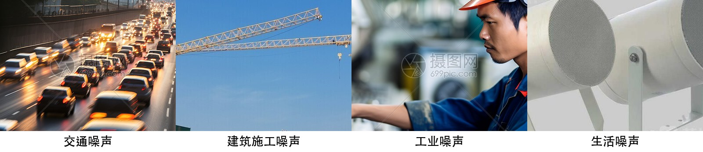
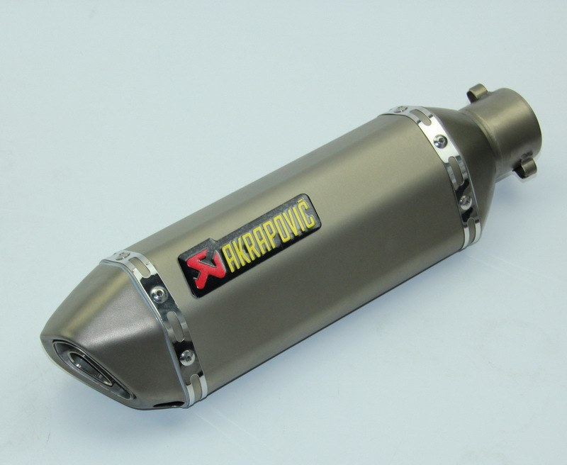
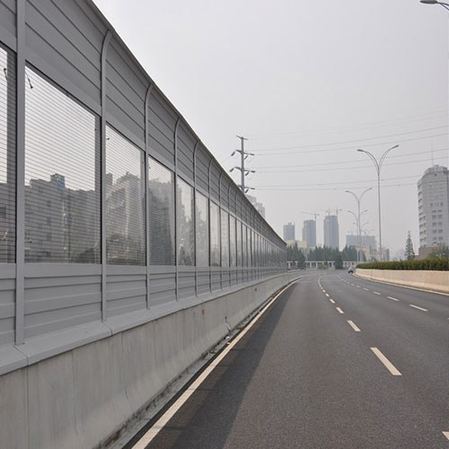
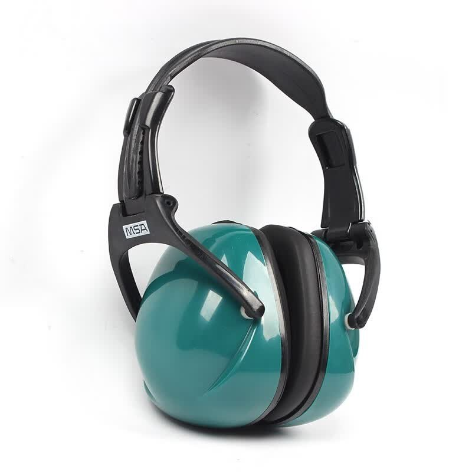

📖 知识讲解
噪声从哪来？有什么危害？又有哪些方法可以控制它？
问题：嘈杂的声音令人心烦 问题
经过热闹的街道或繁忙的建筑工地时，嘈杂的声音 常令人心烦意乱。这些声音对人有哪些危害？怎样才能 有效地防止或减弱它们呢？
噪声的来源 图2.4-1
嘈杂的声音——噪声（noise）是严重影响我们生活的 污染之一。从物理学的角度讲，发声体做无规则振动时 会发出噪声。

演示：观察噪声的波形 演示
观察泡沫塑料块刮玻璃时产生的噪声的波形（图 2.4-1），并与音叉发出的声音的波形作比较。
查看答案
物理学角度：发声体做无规则振动时发出的声音属于噪声。例如泡沫塑料块刮玻璃、机器轰鸣等，其声波的波形杂乱无章。
环境保护角度：凡是妨碍人们正常工作和生活的声音都称为噪声。深夜的歌声虽然本身可能是乐音，但在需要安静的夜晚妨碍了他人休息，因此也成了噪声。
易混点：物理学上的“噪声”强调声波是否规则；环境保护上的“噪声”强调是否对人造成干扰。同一声音在不同情境下可能既是乐音也是噪声。
噪声的危害 必记
噪声会严重影响人们的工作和生活，控制噪声十 分重要。我们知道，声音从产生到引起听觉有这样三 个阶段：
因此，控制噪声也要从这三个方面着手，即：
想想议议 图2.4-2
图2.4-2中控制噪声的措施分别属于哪个方面？你还能举出哪些生活中采用不同方法控制噪声的实例吗？



小资料：人对不同强度的声音的感觉 小资料
| 声音强弱的等级/dB | 主观感觉 |
|---|---|
| 150 | 无法忍受 |
| 120 | 感到疼痛 |
| 100 | 很吵 |
| 80 | 较吵 |
| 60 | 较静 |
| 40 | 安静 |
| 10 | 极静 |
人们以分贝（decibel，符号是dB）为单位来表示 声音强弱的等级。0 dB是人耳刚能听到的最微弱的 声音；30~40 dB是较为理想的安静环境；70 dB会干 扰谈话，影响工作效率；长期生活在90 dB以上的噪声环 境中，听力会受到严重影响并产生神经衰弱、头疼、 高血压等疾病；如果突然暴露在高150 dB的噪声环 境中，鼓膜会破裂出血，双耳完全失去听力。为了保护 听力，声音不能超过90 dB；为了保证工作和学习，声 音不能超过70 dB；为了保证休息和睡眠，声音不能超过 50 dB。
查看答案
三个“不能超过”：
- 为了保护听力，声音不能超过 90 dB；
- 为了保证工作和学习，声音不能超过 70 dB；
- 为了保证休息和睡眠，声音不能超过 50 dB。
70 dB：会干扰谈话，影响工作效率。
90 dB：长期生活在 90 dB 以上的噪声环境中，听力会受到严重影响，并产生神经衰弱、头疼、高血压等疾病。
易混点：“不能超过 90 dB”是针对长期而言，强调保护听力；“150 dB”是突然暴露即可造成鼓膜破裂，二者程度完全不同。
控制噪声 图2.4-3
由于噪声的危害，人们将噪声称为“隐形杀手”。 现代城市把控制噪声列为环境保护的重要项目之一。 在需要安静环境的医院、学校和科学研究部门附近，常 常有禁止鸣喇叭的标志（图2.4-3）。家用电器、机动 车等在设计时都应考虑减小噪声对环境的影响。

控制噪声的三条途径 必记
练习与应用：高架桥隔音板 图2.4-4
住宅区的高架桥两侧常安装隔音板（图2.4-4），请你从减少噪声危害的角度谈谈这样做有什么道理。

查看答案
高架桥隔音板属于阻断噪声传播。它通过阻挡和吸收声波，减少噪声从高架桥向住宅区的传播。
三途径实例：
- 防止噪声产生：给摩托车安装消声器、市区禁止鸣喇叭、选用低噪声机器。
- 阻断噪声传播：高架桥隔音板、道路两旁植树、剧场墙面使用吸音材料。
- 防止噪声进入耳朵：戴防噪声耳罩或耳塞、机场地勤人员佩戴耳罩。
易混点：判断方法的关键是看作用位置——在声源处减弱、在传播过程中减弱，还是在人耳处减弱。同一措施可能同时涉及多种方式，但通常按主要作用位置来分类。